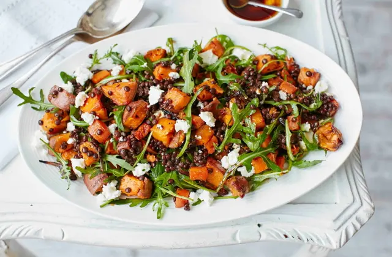

Sweet potato, lentil and feta salad recipe

This hearty salad is packed with roasted sweet potatoes, carrots and red onion
A flavorful salad packed with the right nuitrients you need after a days fasting.
Ingredients:
Recipe yields 4 servings
- 2 large carrots, cut into cubes
- 1 red onion, finely sliced
- 2 medium sized sweet potatoes, cut into cubes
- 3tbsp olive oil
- Pinch dried chilli flakes (optional)
- 2tbsp balsamic vinegar or pomegranate molasses
- 250g pack cooked puy lentils
- 75g feta, crumbled
- 50g rocket
Steps:
- Preheat the oven to gas 7, 220C, fan 200C. Put the carrot, onion and sweet potato in a large shallow baking tray, drizzle with 2 tbsp olive oil and the chilli flakes, if using, season well and roast for 30 mins, turning occasionally, or until tender and turning golden.
- Heat the lentils according to the pack instructions, and then scatter over a serving platter. Top with the roasted vegetables, crumbled feta and rocket then drizzle with the balsamic vinegar or pomegranate molasses and the rest of the extra-virgin olive oil.